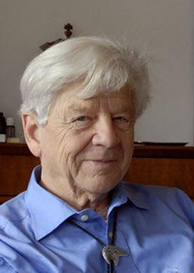
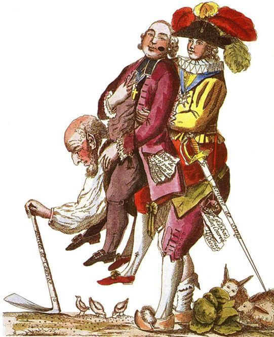
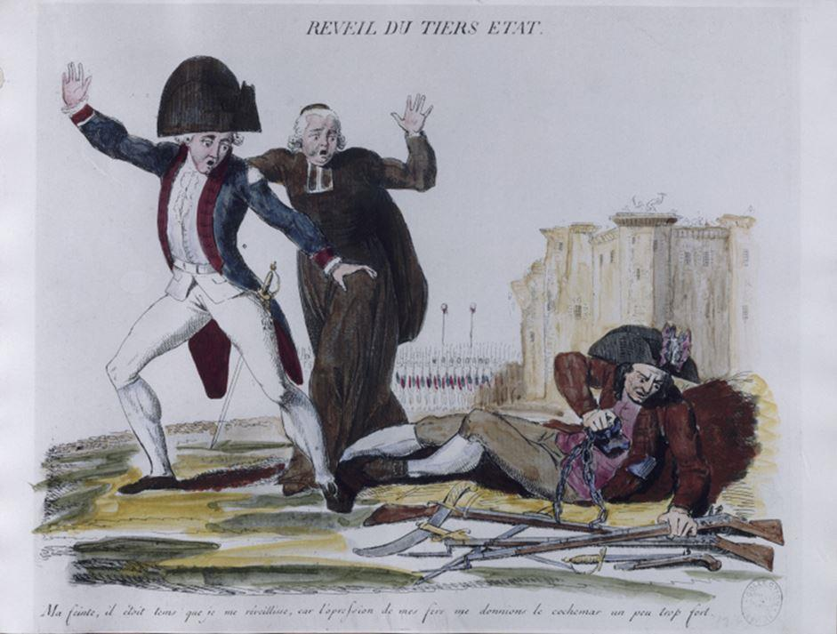
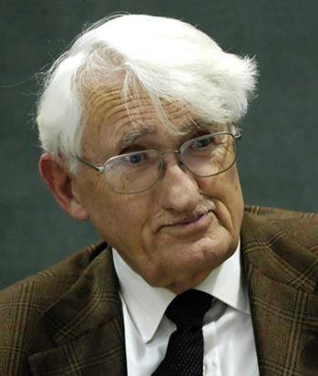

Pascal Ory, professeur émérite d’histoire à Paris I et membre de l’Académie française, a publié en 2020 un ouvrage intitulé ‘’ Qu’est-ce qu’une nation ? ’’ (Editions Gallimard – Bibliothèque des Histoires) dans lequel il met en évidence la puissance inégalée du processus de formation des nations et la capacité de ces dernières à résister aux aléas de l’histoire. Cet ouvrage est important parce qu’il souligne la vacuité du discours progressiste, dominant dans les universités occidentales et dans la sphère politico-médiatique depuis l’après-guerre, lequel prédit la disparition à court terme des nations.
Depuis 1990 (effondrement de l’URSS et du bloc soviétique), on assiste bien au contraire à l’épanouissement des nations sur les ruines du dernier empire et dans les pays occidentaux, où les élites libérales œuvrent méthodiquement à leur disparition en utilisant, d’une part, l’immigration massive et, d’autre part, la propagande la plus considérable de tous les temps ; les peuples refusent de plus en plus largement la politique de ces élites qui se traduit par le déracinement, l’affaissement des pouvoirs populaires et l’accroissement des inégalités.
La nation, un retour en force imprévu
Le processus universel (il concerne désormais l’ensemble de l’humanité) de création des nations a balayé tous les empires modernes, le premier en date ayant été l’empire des Habsbourg et le dernier, celui des Bolcheviks ; entre 1918 et 1990, l’empire turc et tous les empires coloniaux s’effondrèrent également. Comme l’avait prédit le général de Gaulle, la Russie a bu le communisme comme le buvard boit l’encre ; de la même façon, la Chine est en train de digérer l’idéologie communiste dont il ne restera rien à terme. La Chine est dirigée par un parti qui se dit encore communiste bien qu’il n’ait plus que des ambitions nationales et bien qu’il ait oublié la vocation universaliste de son idéologie officielle. Pascal Ory écrit à ce sujet : ‘’Face à une République de Chine résolument passée, à partir des années 1990, aux modes de fonctionnement de la démocratie libérale, c’est la Chine populaire du XXIe siècle qui, paradoxalement, perpétue au fond le plus clairement la philosophie de Sun Yat-sen : pouvoir central fort (deuxième principe du Peuple), capitalisme et paternalisme d’État (troisième principe) et, par-dessus tout, le nationalisme (premier principe)’’ (‘’Qu’est-ce qu’une nation ?’’ ; page 208).
À propos de la Chine, Pascal Ory écrit aussi : ‘’On a commencé avec les Baruya. On pourrait terminer avec les Chinois, qui sont un peu plus nombreux. Le destin baruya nous montrait que l’immémorial ne l’était pas mais que l’identité se construisait partout, même dans la zone la moins accessible de la forêt néo-guinéenne. Le destin chinois nous montre que, multiséculaire, ce centre du monde a été de plus en plus soumis aux influences extérieures – l’acculturation du boudhisme, une dynastie mongole, une dynastie mandchoue, mais aussi un Guomindang très influencé, on l’a vu, par la pensée nationale-libérale puis un parti communiste par définition issu du marxisme-léninisme occidental, etc – et qu’au final toutes ces hybridations n’ont aucunement empêché l’affirmation d’une spécificité, d’une fierté et d’une impérialité chinoises’’ (‘’Qu’est-ce qu’une nation’’ ; page 413).
L’Union Européenne, qui a la prétention de devenir un empire post-national, a suscité un certain engouement pendant la guerre froide, mais elle connaît depuis 1990 un désamour croissant ; elle est désormais clairement contestée par les contingents de plus en plus nombreux de ceux que les oligarques appellent avec mépris les « populistes ». L’avenir de l’empire européen de la Commission de Bruxelles semble fort compromis et comme tous les empires, qui sont par nature coercitifs, il se montre de plus en plus autoritaire, non-républicain et a-démocratique ; cet empire qui ne dit pas son nom ne se réclame pas d’un peuple européen (qui n’existe pas) mais des Droits de l’Homme (un homme qui est de partout et de nulle part) et du marché.
Parallèlement à ce désamour des Européens pour l’Union Européenne, l’intérêt pour les nations croît régulièrement. Pierre-André Taguieff a écrit à ce sujet : ‘’L’idée d’une citoyenneté européenne et, a fortiori, celle d’une citoyenneté cosmopolite sont en train de rejoindre l’idée d’une internationale prolétarienne dans le tombeau des idées mortes.
Le passage au « post-national » ne mobilise guère que quelques fonctionnaires internationaux, des financiers, des chefs de grandes entreprises et une poignée de conférenciers nomades surpayés. Quant à la « démocratie cosmopolite » impliquant une « gouvernance mondiale », espérée ou annoncée par de respectables universitaires, elle reste dans les limbes, à distance respectable de ce bas monde chaotique où les humains restent attachés à leurs appartenances nationales. Le retour à la réalité historique, aussi décevant soit-il, s’impose’’ (‘’La revanche du nationalisme’’, page 24) et plus loin : ’’Par ailleurs, l’engagement anti-européiste du Front national illustre l’échec des tentatives de réorienter le nationalisme français vers un nationalisme européen faisant place à un pluralisme ethno-régionaliste, projet dont Jean Mabire et Dominique Venner furent les principaux idéologues dès la fin des années 1950, avant la reprise de leur héritage intellectuel par la « Nouvelle droite » incarnée par Alain de Benoist’’ (page 133). Il est vrai qu’à la différence de l’Union Européenne, qui est encore soutenue par les libéraux, les sociaux-démocrates et les écologistes, le projet de Venner n’a jamais rassemblé plus de quelques milliers de partisans.
Pour Pascal Ory, il est évident que contrairement à toute attente, les nations résistent bien à la mondialisation : ‘’Que la mondialisation ne soit nullement incompatible avec le maintien, voire le renforcement d’une nationalisation, le cycle populiste ouvert en 2016 en administre la preuve. Sous le cycle progressiste ouvert au lendemain de la Seconde Guerre mondiale la thèse de la solution du national dans le mondial s’imposait comme une évidence ; à l’heure du populisme c’est le mouvement inverse qui, sans attendre, s’opère : le mondial se décline en national’’ (‘’Qu’est-ce qu’une nation’’ ; page 412).
Les intellectuels progressistes se sont trompés
Il n’existait qu’une cinquantaine d’États en 1945 tandis qu’il y en a aujourd’hui près de deux cents et ce n’est pas terminé parce qu’en Afrique, notamment, de nombreux États issus de la décolonisation sont hétérogènes, ce qui génère des conflits internes et externes. Il est probable que de nouveaux États verront le jour dans cette région du monde. La création continue de nations qui a lieu depuis 1945 a mis à mal la théorie progressiste qui avait prédit leur disparition : ‘’A l’issue de la Seconde guerre mondiale la chute finale du IIIe Reich et de ses alliés, traduite comme défaite des adversaires de l’humanisme chrétien (interprétation démocrate-chrétienne), de l’esprit des Lumières (interprétation libérale) et de l’internationalisme prolétarien (interprétation communiste), donnait à la période ouverte par elle sa tonalité dominante. De cette ordalie – scène classique du mythe intellectuel – modèle 1945 il paraissait facile de nommer les vaincus : religion, tradition, assurément, mais nation plus encore’’ (‘’Qu’est-ce qu’une nation ?’’ , page 25) et, pourtant, ‘’Le XXIe siècle se situe dans la continuité des deux précédents en continuant à produire du national’’ (page 367).
Parmi les innombrables intellectuels progressistes qui ont tenté de démontrer que l’illusion nationale finirait par se dissiper, le marxiste E. Hobsbawm ‘’faisait de la nation une superstructure émanant de la bourgeoisie capitaliste’’ et, tout comme Benedict Anderson et Ernst Gellner, il concluait ‘’que si le national avait encore de beaux jours devant lui il était fatalement condamné par l’évolution générale des sociétés industrielles’’ (page 31).
En fait, c’est l’illusion communiste qui s’est dissipée et désormais l’illusion mondialiste d’origine libérale et sociale-démocrate suit la même trajectoire tandis que les nations se portent à merveille et n’ont jamais été aussi nombreuses. ‘’Quant à l’hypothèse libérale-libertaire selon laquelle la réduction au Village Planète’’ (globalization) diluerait le national dans une économie et une culture partagées, sa vérification tarde à venir’’ (page 411). ‘’Dès lors force est de reconnaître que l’essentialisation politique à base économique – la « classe ouvrière » - des Internationales socialistes – a beaucoup moins bien résisté aux ordalies du XXe siècle que l’essentialisation politique à base culturelle – en quelque sorte la « classe nationale »’’ (page 405).
Les nations sont des créations politico-culturelles
Pour Pascal Ory, les nations sont des créations politico-culturelles dont la genèse est très longue ; la construction d’une nation ne se fait pas en quelques décennies : ‘’La thèse avancée dès cette époque était que l’illusion rétrospective d’Anderson, Gellner ou Hobsbawm était fondée sur une confusion entre le travail de consolidation des États-Nations modernes – ne remontant, on le verra, à guère plus qu’un couple de siècles – et le travail d’homogénéisation que produit, par fonction, toute institution politique, et qui peut, lui, s’être étendu sur des périodes incommensurablement plus longues. L’empan de l’identification progressive d’une institution française, fondant, par approximations successive, une « France », donc des Français, donc – pour finir – un peuple français, est de l’ordre du millénaire, et sans solution de continuité, si l’on se place symboliquement au 17 juin 1789, jour de l’auto-proclamation - sans précédent dans son histoire - de son « Assemblée nationale » ‘’ (page 65). Selon l’historien, à l’origine des nations il y a toujours un pouvoir politique expansif et une culture qui lui est associée. Cette culture préexiste au pouvoir politique mais ce dernier alimente le développement et l’expansion de la culture laquelle s’impose progressivement à des communautés dont les pouvoirs politiques trop faibles ont été vaincus. Toutes les communautés culturelles du passé ne devinrent donc pas des nations : ‘’On le voit : la répartition pré-nationale des peuples n’est jamais qu’une affaire de rapports de forces. L’histoire des peuples est un riche dictionnaire mais c’est aussi, par là même, un grand cimetière de noms abolis, les noms de tous les peuples qui n’ont pas pu atteindre l’âge des nations’’ (‘’Qu’est-ce qu’une nation ? ‘’ ; page 82). On peut regretter la disparition de ces cultures mais, comme au niveau biologique, un processus de sélection est à l’œuvre au niveau politico-culturel.
On entend dire parfois que la nation française a été créée par l’État tandis qu’en Allemagne c’est au contraire la nation qui a créé l’État. Mais en fait, la culture allemande était celle de nombreux États et le processus sélectif a généré deux États de langue allemande, et pas un seul, parce qu’il y avait deux pouvoirs politiques forts dans l’espace germanique, la Prusse et l’Autriche. Ces deux pouvoirs politiques rivaux ont donné naissance à deux nations. L’espace culturel allemand n’échappe donc pas à ce qui semble bien être une règle : les pouvoirs politiques sont à l’origine des nations. La nation prussienne elle-même avait été créée par un ordre militaire allemand dans une région peuplée de populations baltes et slaves, non germaniques donc, qui ont été englobées dans une nation de culture germanique.
George SorosLes « dé-constructeurs » des nations (qui œuvrent à la « déconstruction » de toutes les institutions héritées du passé telle la famille) pensent avoir atteint leur but en montrant qu’elles sont des constructions historiques, politiques et culturelles. ‘’ Et alors ? ’’, leur répond à juste titre Pascal Ory. A partir de la révolution néolithique et de l’augmentation des populations qui en a résulté, les humains se sont adaptés en créant des institutions qui étaient des nouveautés et qui, pour autant, ne sont ni détestables ni condamnables ; la nation est une de ces nouveautés qui répond à certains besoins humains fondamentaux.
Mais toutes les institutions créées depuis ont été des nouveautés y compris celles des pays communistes chers à Hobsbawm. Parmi ces institutions, certaines furent entées sur des comportements sélectionnés au cours de notre longue évolution et d’autres furent au contraire de pures créations. Les premières, dont les nations sans doute, résistent mieux à l’usure du temps que les secondes.
L’immense majorité des peuples sont devenus des nations mais pour autant, ces nations diffèrent profondément dans leur nature ; comme l’écrit Pascal Ory, ‘’le national ne s’analyse en dernière instance que nationalement’’. Chaque nation est construite avec des éléments spécifiques dont l’importance relative et l’arrangement varient d’une nation à l’autre. Le monde des nations, qui peut sembler, en première approche, invariable d’un bout à l’autre de la planète, est, au contraire, extrêmement varié. Notre monde de nations n’est donc pas un monde monotone même s’il est moins chatoyant que ne l’était le monde pré-national. Cette diversité des nations ne répond pas aux principes universalistes des idéologies libérale et socialiste ; c’est la raison pour laquelle les libéraux et les socialistes œuvrent avec acharnement à leur déconstruction. Ces derniers ont bien compris que ce sont les nations et leurs cultures qui résistent à leur entreprise d’homogénéisation et d’atomisation de l’humanité. Soros ne lutte pas contre une « civilisation européenne » dont on attend encore une définition mais contre la Hongrie, la Pologne, la Russie….ces nations qui refusent de disparaître.
Face aux actions des dé-constructeurs, et en particulier de ceux de Bruxelles (lesquels ont de nombreux complices dans toutes les capitales européennes), la seule réponse possible est celle des Européens de l’est qui leur opposent une politique de renforcement culturel des nations. C’est en mettant en œuvre, dans chacun des pays européens, une telle politique que nous pourrons sauver les spécificités culturelles européennes parce que, si nos nations ont été affaiblies par la propagande européiste et par celle des mondialistes (communistes, socialistes et libéraux) , il n’en reste pas moins que leurs fondations ne sont pas encore détruites, mais le temps presse parce que les dé-constructeurs disposent de moyens gigantesques. Il n’y a pas d’alternative à cette voie nationale ; l’idée de la création d’une nation et d’une culture européennes ne rencontre aucun écho et, de plus, nous l’avons déjà dit, la cristallisation d’une nation est toujours très longue. Par ailleurs, les Européens qui souhaitent le ré-enracinement de nos sociétés sont attachés aux nations issues de notre histoire longue tandis que les partisans de la construction européenne sont essentiellement des universalistes pour lesquels ladite construction est une étape vers l’État mondial. Les partisans de l’Europe des régions ne sont que d’infimes minorités.
Au sujet de ces derniers, qui se disent « identitaires » (mais tous les « identitaires » ne sont pas européistes), il faut noter qu’ils considèrent eux aussi que les nations ne sont que de vulgaires constructions sans intérêt. Aux nations ils opposent ce qu’ils appellent les « patries charnelles », c'est-à-dire les régions ayant un fondement historique. Or, les régions ont été elles aussi des constructions politiques mais elles n’ont jamais atteint l’âge des nations comme le dit très justement Pascal Ory. La Bretagne, par exemple, a été une construction politique qui a avorté en 1488 ; elle n’a jamais été une nation et elle n’a jamais constitué un ensemble culturel homogène ; il y eut toujours une Bretagne romane et une Bretagne bretonnante.
En 1488, une moitié de la noblesse bretonne combattait aux côtés du roi de France contre le Duc de Bretagne et l’acculturation de cette noblesse, laquelle avait souvent de très bonnes relations avec ses voisins de l’est depuis le haut Moyen Âge, a commencé dès la création des premiers petits royaumes subordonnés de la péninsule (voir le livre de Mickaël Gendry à ce sujet).
Quant à la langue bretonne et à la culture qu’elle portait, elles ont commencé à reculer dès le Moyen Âge, longtemps avant que ne naissent l’abbé Grégoire et les hussards noirs de la République. En 1791, sur les cinq départements de l’ancienne province, deux et la moitié de deux autres étaient totalement francisés (on y parlait un dialecte roman proche des autres dialectes de l’ouest français, le gallo).
Il n’y a aucune raison d’accorder aux régions une authenticité que n’auraient pas les États-nations lesquels ont en général une dimension « charnelle » très forte que n’ont ni la plupart des régions ni l’Europe. Ceci dit, l’enracinement local n’est pas incompatible avec le sentiment national, bien au contraire, et les locuteurs des langues minoritaires autochtones doivent pouvoir les pratiquer et les transmettre.
La nation a-t-elle des fondements naturels ?
On a pu croire que la nation était intimement liée au libéralisme parce que ce dernier a accompagné la formation des premières nations modernes (Angleterre, Pays-Bas, États-Unis, France…..) mais la suite de l’histoire a montré que la formation des nations modernes pouvait être associée au marxisme-léninisme (Chine, Vietnam, Laos, Cambodge……), à diverses formes de socialisme (Algérie, Egypte…), à une religion (Iran), au conservatisme antidémocratique et catholique (Portugal de Salazar), au fascisme (en Italie le fascisme fut une étape de consolidation d’une nation italienne née un demi-siècle plus tôt et qui était encore très fragile)…. et que ce qui perdure, une fois que les miasmes idéologiques se sont dissipés ce sont les nations. Contrairement à une idée très prégnante au sein des milieux progressistes, le nationalisme n’est pas intrinsèquement fasciste, même s’il y eût une forme fasciste du nationalisme qu’il était légitime de combattre (cette forme de nationalisme n’existe plus qu’à l’état groupusculaire). Les associations temporaires entre le nationalisme et diverses idéologies n’ont finalement que peu d’importance parce qu’elles finissent par s’évanouir au fil du temps ; la nation italienne existe, bien que le fascisme appartienne au passé, la nation française existe, bien que les héritiers de la Révolution française, à de rares exceptions près, comme Chevènement et ses amis, lui soient désormais très hostiles….
Dans certains cas, les nations ont des origines lointaines ; la cristallisation de la nation France a commencé au Moyen Âge avant même la guerre de cent ans qui a accéléré le processus (même chose en Angleterre). Notre nation s’est construite autour de la figure royale associée au christianisme. Il n’y a plus de roi en France et le christianisme n’a plus l’importance qu’il a eu, loin s’en faut, mais la France continue d’exister indépendamment des aléas de nature politique, idéologique et religieuse. Rappelons que le mot « nation » dérive du mot latin « natio », qui est lié à la naissance. La « natio » des Romains avait un sens profondément ethnique (la « patria » de Cicéron c’était Rome mais sa « natio » c’était Arpinum, là où avaient vécu ses ancêtres). La nation n’est pas d’abord une idée ; elle répond à un besoin obscur et profond d’appartenance à un groupe qui se traduit par l’ethnocentrisme, une tendance universelle dont les anthropologues ont constaté l’existence dans tous les groupes humains.
La généticienne Evelyne Heyer a écrit à ce sujet : ‘’En revanche, il est un trait qui semble constitutif de la nature humaine : l’ethnocentrisme, le fait de préférer son groupe. Dans la plupart des sociétés, il existe un terme valorisant pour définir son propre groupe (l’endogroupe) et dépréciatif pour désigner les « autres », ceux extérieurs à son groupe……Pourquoi l’espèce humaine est-elle « ethno-centrée » ? En termes évolutifs, une explication raisonnable est qu’il vaut mieux partager ses ressources avec quelqu’un de son groupe, qui pourra dans le futur vous rendre la pareille.
Ce mécanisme de réciprocité fait de nous un être social particulièrement doué par la coopération’’ (‘’L’odyssée des gènes’’ ; page 304).
Nos ancêtres ont été des chasseurs, pendant les centaines de milliers d’années qui ont précédé la révolution néolithique laquelle, dans nos contrées, a commencé vers 6000 avant notre ère, c'est-à-dire très récemment. Ils ont subi une forte pression de sélection allant dans le sens de la coopération, de la solidarité et de l’obéissance aux meilleurs des chasseurs. L’activité de chasse ne va pas sans l’existence d’une « réserve », d’un territoire exclusif. Cette pression de sélection est probablement à l’origine de certains de nos comportements les plus caractéristiques : territorialité (et donc frontières), hiérarchie, ethnocentrisme, solidarité et coopération. Notons que nous partageons ces caractéristiques avec nos cousins les chimpanzés bien qu’ils ne soient plus, comme nous, que marginalement des chasseurs. Ce dont ne disposent pas les chimpanzés c’est de la capacité à créer des symboles qui permettent de différencier les groupes les uns des autres. Les humains, depuis la nuit des temps, se sont ingéniés à créer des symboles et des récits ayant pour fonction d’ajouter une frontière immatérielle à la frontière géographique séparant le territoire d’un groupe de ceux des groupes voisins.
Ce qu’Edward Wilson appelle « eu-socialité » a été le moyen qui a permis aux humains de survivre dans des environnements hostiles. L’eu-socialité se traduit par la solidarité entre les membres du groupe laquelle permet de faire face de façon plus efficace aux dangers provenant de l’environnement naturel en général et des groupes concurrents en particulier. A partir du néolithique, les groupes humains sont devenus beaucoup plus grands qu’ils ne l’étaient au paléolithique (quelques centaines de personnes tout au plus) mais l’eu-socialité et les tendances comportementales qui lui sont liées ont perduré. Ethnocentrisme et altruisme à l’égard des membres du groupe, devenu nation, sont toujours au centre de l’existence des humains.
Pascal Ory pense que les intellectuels modernes accordent, à tort, beaucoup trop d’importance aux idées. Il a sans doute raison ; par delà les constructions idéologiques et indépendamment de ces dernières, notre nature profonde est un ressort essentiel du politique et de l’éthique. Julien Freund combattait farouchement l’idée moderne selon laquelle il n’y aurait pas de nature humaine ; a contrario, il affirmait que les six essences (dont le politique) qu’il a identifiées ‘’sont enracinées dans la nature humaine en tant qu’elles ont pour fondement une donnée de cette nature au-delà de laquelle on ne saurait remonter’’ (Julien Freund ; ’’Philosophie philosophique’’ ; page 110). À l’instar du philosophe mosellan on peut penser que notre nature est le socle sur lequel repose le politique, c'est-à-dire, entre autres, les relations entre les groupes séparés par des frontières.
Pascal Ory semble poser la question de la « naturalité » du fait national : ‘’Cette obstination, posée en exergue de cette analyse, que met la nation à ne pas disparaître porte à croire qu’elle répondrait encore à un besoin et conduit à poser à cet objet comme aux autres la seule question qui, au fond, meuve l’historien, qui l’a empruntée à la philosophie comme Prométhée vola le feu aux dieux pour le donner aux hommes : « pourquoi y a-t-il quelque chose plutôt que rien ? »’’ (‘’Qu’est-ce qu’une nation ?’’ ; page 413). En effet, pourquoi y a-t-il des nations plutôt que rien ? Pourquoi les nations perdurent-elles en dépit des efforts inouïs qui sont faits pour les faire disparaître ?
La seule réponse plausible c’est qu’un besoin fondamental propre à la nature humaine sous-tend ce phénomène universel. Les nations ne sont pas purement naturelles, bien sûr, elles sont aussi des productions culturelles et politiques ; la forme que nous leur connaissons aujourd’hui est une des nombreuses formes d’organisation adoptées par les groupes humains depuis la nuit des temps. Mais ces formes de nature et de taille très différentes ont en commun la territorialité, l’ethnocentrisme, la hiérarchie et la solidarité (lire à ce sujet les livres du fondateur de l’éthologie humaine, Irenaüs Eibl-Eibesfeldt : ‘’Par delà nos différences’’ et ‘’L’homme programmé’’).
Pascal Ory écrit au sujet de l’attachement communautaire : ‘’L’attachement de l’individu à la communauté au sein de laquelle il est né n’est pas l’exception mais la règle, ne date pas de Bouvines – non plus que de Teutoburg (9 après J.C.) ou de Gaugamèles (331 avant)- mais, pour le coup, remonte à « la nuit des temps. La sensibilité «patriotique », comprise ici comme une valorisation du pays natal, qui passe par toutes les nuances du sentiment, de la nostalgie à l’exaltation guerrière, est repérable dans les plus anciennes épopées, à commencer par l’Odyssée, qui est, structurellement, fondamentalement, un nostos, un retour vers la terre des ancêtres’’ (‘’Qu’est-ce qu’une nation ? ’’ ; page 57).
Contrairement à ce que croient naïvement certains, les nations telles que nous les connaissons aujourd’hui n’existent pas depuis toujours ; ce sont des constructions historiques (politiques et culturelles) bien sûr mais ces constructions reposent sur un besoin qui, lui, existe depuis des centaines de milliers d’années voire des millions d’années (les derniers ancêtres communs des chimpanzés et des humains vivaient il y a sept millions d’années et nos plus proches cousins vivent, comme nous, au sein de communautés territoriales, hiérarchiques et solidaires). Les nations ne seront pas éternelles ; la taille des groupes humains et celle de leurs territoires évolueront certainement dans un avenir plus ou moins lointain ; nous ne pouvons pas exclure la disparition des nations actuelles et la réapparition de groupes de taille beaucoup plus modeste. La « liquéfaction » des sociétés occidentales s’accompagne d’ailleurs de la formation de groupes de toutes sortes, des bandes de banlieues, territoriales, hiérarchisées et très agressives à l’endroit des voisins et concurrents, aux réseaux de bobos séparatistes qui rêvent de s’affranchir de la plèbe populiste. Le séparatisme gagne du terrain aux États-Unis où, selon certaines études, 25% des citoyens souhaiteraient que leur État fédéré sorte de la fédération (jusqu’à 40% dans certains États). En décembre 2020, le leader des républicains du Texas a d’ailleurs évoqué la séparation possible de cet État. Ceci dit, nous ne sommes encore ni à la veille ni à l’avant-veille de la disparition des nations.
Identité et nation
Pour la philosophe Simone Weil, il était évident que la nation est devenue le lieu essentiel de l’enracinement : ’’Une autre espèce de déracinement encore doit être étudiée pour une connaissance sommaire de notre principale maladie. C’est le déracinement qu’on pourrait nommer géographique, c'est-à-dire par rapport aux collectivités qui correspondent à des territoires. Le sens même de ces collectivités a presque disparu, excepté pour une seule, pour la nation. Mais il y en a, il y en a eu beaucoup d’autres. […..]La nation seule s’est substituée à tout cela [….]La nation seule s’est substituée, depuis déjà longtemps, joue le rôle qui constitue par excellence la mission de la collectivité à l’égard de l’être humain, à savoir assurer à travers le présent une liaison entre le passé et l’avenir.
En ce sens, on peut dire que c’est la seule collectivité qui existe dans l’univers actuel’’. S’inspirant de Simone Weil, la politologue britannique Margaret Canovan a écrit en 1996 que dans notre époque où la norme est l’arrachement aux déterminismes sociaux et culturels et où la désintégration des constantes anthropologiques est donnée pour inévitable et bénéfique, le besoin d’appartenance, d’enracinement, d’identité se fixe sur la nation.
La politologue et sociologue Liah Greenfeld pense qu’ ’’Aujourd’hui, l’identité nationale est à la base de l’essence d’une personne parce que la nation est le groupe collectif et politique le plus important. Toute société est définie en tant que nation. […..]Cela veut dire qu’on appartient d’abord et avant tout à une nation et que c’est précisément cette appartenance qui définit notre statut dans le monde et, par conséquent, notre identité’’.
Quant au politologue Pierre-André Taguieff, il a écrit dans son ouvrage intitulé ‘’La revanche du nationalisme’’ (page 215 ), en s’inspirant d’Orwell : ‘’les haines et les amours nationalistes sont présents chez la plupart des hommes, que cela nous plaise ou non’’.
Tous ces auteurs voient dans la nation la traduction moderne du besoin fondamental et même vital d’identité collective et d’enracinement dans un groupe. Pascal Ory pense aussi que : ‘’Toute l’histoire qui précède a un net caractère performatif : une nation prouve son existence en posant « ab initio » une identité, par laquelle elle se distingue d’une identité alternative’’ (page 217). ‘’Le nationalisme n’est donc pas l’autre nom – politique, voire néo-spirituel – du capitalisme, a fortiori son faux nez. Il est l’autre nom de la quête d’identité collective, nourrie d’une nouvelle sensibilité’’ (‘’Qu’est-ce qu’une nation’’ ; page 410). Et au terme d’une évocation des Baruyas de Nouvelle Guinée, dont l’existence fut découverte par hasard en 1951, il conclut : ‘’Rien donc de plus fondamental que l’identification, rien de plus structurant que l’identité’’ (page 59).
Révolution française : entre nation idéologique et nation ethnique
Les acteurs principaux de la Révolution française ont balancé entre nation civique et nation ethnique, bien que la première ait eu plus d’importance pour la plupart d’entre eux. Leur conception de la nation était très idéologique puisque pour Siéyès ou Rabaut Saint-Etienne, la nation c’était le Tiers-État dont étaient exclus les nobles et les ecclésiastiques. Cette définition de la nation (‘’Le Tiers-État constitue une nation complète’’) reposait donc sur l’exclusion d’une partie des Français et légitimait de ce fait la guerre civile (Pierre Nora, « Dictionnaire critique de la Révolution française »).
Cette utilisation du mot « nation » auquel a été donné une signification idéologico-politique trahit totalement sa signification antérieure (nation, issu du mot latin « natio » et du verbe « naître » avait dans la Rome antique, y compris pendant la période républicaine, le sens de « communauté ethnique » ; sous l’Ancien régime, il avait le sens de « peuple » ou de « communauté populaire » occupant un territoire et parlant une langue commune). Au moment de la Révolution, l’exclusion de la noblesse n’était pas seulement politique mais aussi ethnique puisque certains révolutionnaires, reprenant à leur compte la théorie du comte de Boulainvilliers, justifiaient cette exclusion par les origines germaniques de la noblesse (qui est issue, en réalité, d’une absorption rapide des chefs francs par la classe dirigeante gallo-romaine comme l’a montré Régine Le Jan) lesquelles étaient donc différentes de celles du Tiers-État dont les membres descendaient, eux, des Gaulois. Au sein même du mouvement révolutionnaire, la nation idéologique et la nation ethnique étaient intimement mêlées, même si la première était prépondérante.
Cette ambiguïté du mot « nation » est présente dans les écrits de François Guizot (en 1822) selon lequel ‘’Une nation est une multitude d’hommes ayant la même origine, vivant dans le même État et sous les mêmes lois’’. Il n’est donc pas étonnant que ce mot puisse basculer à tout moment sur son versant politique ou sur son versant ethnique ; c’est ce qui se passa à la fin du XIXe siècle, lorsque l’idée de nation passa de la gauche à la droite mais avec le sens de « communauté ethnoculturelle et historique » détentrice de la souveraineté (plutôt que de souveraineté, il serait préférable de parler d’autonomie, c'est-à-dire de liberté de décider de son avenir et de choisir les lois, la souveraineté étant un attribut, non pas du peuple, de la nation ou de l’Assemblée nationale mais du commandement comme l’a souligné Julien Freund). Cet apport involontaire de la Révolution française n’est pas anodin parce qu’il renforça, in fine, considérablement le sentiment d’appartenance à la nation comprise comme « communauté ethnoculturelle ». L’adjonction de la souveraineté populaire aux attributs affectifs propres à toute communauté ethnique augmenta la puissance du sentiment national. Notons cependant que la Rome républicaine avait connu un tel sentiment que les Romains disaient « patriotique » (ils réservaient le mot « natio » aux « petites patries » telle Arpinum, la ville dont était originaire Cicéron et qu’il chérissait tant) ; le sens moderne de la nation est très proche de celui de la « patria » des Romains. La « patria » était à la fois une communauté historique, culturelle et de destin, mais, de plus, les Romains l’associaient étroitement à la « re publica »(Cicéron), c'est-à-dire à l’intérêt général.
Patriotisme constitutionnel ou nationalisme « mesuré» ?
Le philosophe Jürgen Habermas a pensé qu’il était possible de remplacer « l’ethno-nationalisme » qui, selon lui, sentait mauvais, par un patriotisme dit constitutionnel ; l’objectif était de remplacer les émotions ethniques et communautaires par un amour fou de la constitution ! Il semble bien que cette idée n’ait rencontré aucun écho et que le « patriotisme constitutionnel » soit incapable de susciter la moindre émotion, or, ce sont les émotions qui font la force des communautés. Pierre-André Taguieff a écrit à ce sujet (‘’La revanche du nationalisme’’, page 215) :
‘’L’État libéral, protecteur des libertés individuelles mais aussi de la concurrence interindividuelle, ne peut satisfaire pleinement le besoin d’identification des citoyens à leur communauté politique. Comme l’a fait remarquer Charles Taylor, le patriotisme constitutionnel (ou « constitutionnel procédural ») est trop abstrait pour satisfaire ce besoin. Si le patriotisme comme vertu politique consiste dans une « préférence continuelle de l’intérêt public au sien propre », il dépasse l’égoïsme individuel sans pour autant se diluer dans un altruisme élargi en un cosmopolitisme de principe. L’attachement du citoyen au bien commun et à la liberté générale ne se confond pas avec « l’attachement apolitique pour les principes universels que défendent les stoïciens ». Le patriotisme bien compris, dans lequel, pour parler comme Montesquieu, « l’amour des lois » est inséparable de « l’amour de la patrie », implique une identification avec une communauté politique particulière. Il exprime l’identité collective ainsi que les valeurs de la communauté, et, à ce titre, il comporte une dimension culturelle qui lui permet d’échapper à l’abstraction. Il renforce ainsi l’esprit civique, alors que l’individualisme libéral dissout le lien social et affaiblit l’esprit civique. Taylor caractérise ainsi ce patriotisme s’inscrivant dans la tradition de l’humanisme civique : ‘’Les liens de solidarité avec mes compatriotes dans une République qui fonctionne sont fondés sur un sens du destin partagé où le partage a en lui-même une valeur. C’est ce qui donne à ce lien une importance spéciale, ce qui fait que mon attachement à ces personnes et à cette entreprise est particulièrement fort et ce qui anime ma « vertu », ou patriotisme’’. Il s’agit donc de définir un nationalisme moralement acceptable, répondant au besoin d’appartenance et d’identification sans sombrer dans le chauvinisme, l’autoritarisme et la xénophobie’’.
L’amour des institutions politiques passe par la cohésion interne des nations et cette cohésion repose d’abord sur des sentiments et des émotions. Ceci dit, Pierre-André Taguieff a raison d’insister sur le fait que le nationalisme doit rester dans les limites de ce qui est acceptable, c'est-à-dire qu’il doit respecter le jus gentium, le droit des peuples. En effet, un nationalisme devient dangereux quand il se fait menaçant pour les peuples étrangers ou quand il cherche à justifier des mesures totalitaires en invoquant le salut de la nation. Il y eut de telles dérives dans un passé proche, ce que nous rappellent en permanence les « progressistes ». Mais nous pouvons rétorquer à ces derniers que les communistes ont commis des crimes de masse au nom de l’égalité et que les coupeurs de têtes de 1793 ont commis le premier des génocides politiques (celui des Vendéens) au nom de la liberté. La nation n’est pas la seule cause des malheurs humains, loin s’en faut et d’ailleurs, les crimes des nazis sont moins une conséquence du nationalisme allemand que de leur racisme pathologique prétendument scientifique. Le nationalisme allemand a été infecté par le racisme dès la fin du XIXe siècle (pangermanisme) avant qu’Hitler ne parachève cette évolution néfaste. Julien Freund nous invitait à avoir le sens de la mesure en toutes choses ; le nationalisme doit être mesuré.
Nation, démocratie, solidarité
Il semble évident pour de nombreux politologues que l’existence d’un système démocratique implique celle d’une communauté dont les membres sont liés par une culture et une mémoire partagées. Pierre-André Taguieff a écrit à ce sujet : ‘’Si la démocratie ne peut s’exercer que dans le cadre d’une communauté politique déterminée, de la cité-État à l’État-nation, cette communauté suppose l’existence de citoyens qui, pour être solidaires, doivent partager un certain nombre de représentations et de croyances, mais aussi de manières d’être, définissant ce qu’il faut bien appeler une identité culturelle….On peut défendre la conception civique de la nation, fondée sur la citoyenneté, sans nier pour autant la dimension ethnique de la vie collective, qui se marque par la maîtrise d’une langue nationale et l’attachement à une culture nationale…..Une communauté de citoyens ne saurait se réduire à une somme d’individus sans appartenances, représentants quelconques du genre humain. À cet égard, l’idée d’une citoyenneté cosmopolite est une chimère (‘’Qu’est-ce qu’une nation ? ’’, page 202). La démocratie, comme la solidarité, repose sur l’attachement et l’appartenance à une même communauté ethnoculturelle. L’idée d’une démocratie mondiale et celle d’une solidarité universelle ne sont que des billevesées qui ne se concrétiseront jamais. Quant à l’idée libérale d’un monde d’individus souverains et émancipés, libérés de toute appartenance et de tout héritage culturel, elle nuit gravement à la cohésion des communautés nationales qu’elle a réussi à infecter mais elle n’est pas en mesure de supplanter le besoin d’appartenance communautaire, sans doute, parce que ce besoin est un invariant anthropologique comme le pense le psychologue Vamik Volkan. Or, l’existence d’un pouvoir politique populaire et d’un système de solidarité sociale passe par celle d’un fort sentiment d’appartenance communautaire. La nation est le cadre sans lequel il ne peut y avoir, à notre époque, ni l’un ni l’autre.
Nos progressistes, dont les libéraux, gomment de manière très nette la dimension ethnoculturelle de notre nation dont ils ne prononcent même plus le nom. La France est devenue, dans leur bouche, la république, dont l’identité est purement idéologique ; les « valeurs de la république », qui sont invoquées à longueur de journées, ne sont qu’un ensemble d’idées fumeuses concernant les « droits » imaginaires d’un Homme tout aussi imaginaire qui n’aurait ni racines ni appartenance communautaire. Face à eux, il convient de restaurer pleinement la nation afin de préserver notre culture et nos traditions mais aussi pour développer des institutions ayant pour objectif le Bien Commun.
Partager cette page